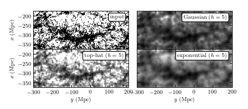

Great Wall KDE¶
Figure 6.3
Kernel density estimation for galaxies within the SDSS “Great Wall.” The top-left panel shows points that are galaxies, projected by their spatial locations (right ascension and distance determined from redshift measurement) onto the equatorial plane (declination ~ 0 degrees). The remaining panels show estimates of the density of these points using kernel density estimation with a Gaussian kernel (upper right), a top-hat kernel (lower left), and an exponential kernel (lower right). Compare also to figure 6.4.
{kind=link}
# Author: Jake VanderPlas
# License: BSD
# The figure produced by this code is published in the textbook
# "Statistics, Data Mining, and Machine Learning in Astronomy" (2013)
# For more information, see http://astroML.github.com
# To report a bug or issue, use the following forum:
# https://groups.google.com/forum/#!forum/astroml-general
import numpy as np
from matplotlib import pyplot as plt
from matplotlib.colors import LogNorm
from scipy.spatial import cKDTree
from scipy.stats import gaussian_kde
from astroML.datasets import fetch_great_wall
# Scikit-learn 0.14 added sklearn.neighbors.KernelDensity, which is a very
# fast kernel density estimator based on a KD Tree. We'll use this if
# available (and raise a warning if it isn't).
try:
from sklearn.neighbors import KernelDensity
use_sklearn_KDE = True
except:
import warnings
warnings.warn("KDE will be removed in astroML version 0.3. Please "
"upgrade to scikit-learn 0.14+ and use "
"sklearn.neighbors.KernelDensity.", DeprecationWarning)
from astroML.density_estimation import KDE
use_sklearn_KDE = False
#----------------------------------------------------------------------
# This function adjusts matplotlib settings for a uniform feel in the textbook.
# Note that with usetex=True, fonts are rendered with LaTeX. This may
# result in an error if LaTeX is not installed on your system. In that case,
# you can set usetex to False.
from astroML.plotting import setup_text_plots
setup_text_plots(fontsize=8, usetex=True)
#------------------------------------------------------------
# Fetch the great wall data
X = fetch_great_wall()
#------------------------------------------------------------
# Create the grid on which to evaluate the results
Nx = 50
Ny = 125
xmin, xmax = (-375, -175)
ymin, ymax = (-300, 200)
#------------------------------------------------------------
# Evaluate for several models
Xgrid = np.vstack(map(np.ravel, np.meshgrid(np.linspace(xmin, xmax, Nx),
np.linspace(ymin, ymax, Ny)))).T
kernels = ['gaussian', 'tophat', 'exponential']
dens = []
if use_sklearn_KDE:
kde1 = KernelDensity(5, kernel='gaussian')
log_dens1 = kde1.fit(X).score_samples(Xgrid)
dens1 = X.shape[0] * np.exp(log_dens1).reshape((Ny, Nx))
kde2 = KernelDensity(5, kernel='tophat')
log_dens2 = kde2.fit(X).score_samples(Xgrid)
dens2 = X.shape[0] * np.exp(log_dens2).reshape((Ny, Nx))
kde3 = KernelDensity(5, kernel='exponential')
log_dens3 = kde3.fit(X).score_samples(Xgrid)
dens3 = X.shape[0] * np.exp(log_dens3).reshape((Ny, Nx))
else:
kde1 = KDE(metric='gaussian', h=5)
dens1 = kde1.fit(X).eval(Xgrid).reshape((Ny, Nx))
kde2 = KDE(metric='tophat', h=5)
dens2 = kde2.fit(X).eval(Xgrid).reshape((Ny, Nx))
kde3 = KDE(metric='exponential', h=5)
dens3 = kde3.fit(X).eval(Xgrid).reshape((Ny, Nx))
#------------------------------------------------------------
# Plot the results
fig = plt.figure(figsize=(5, 2.2))
fig.subplots_adjust(left=0.12, right=0.95, bottom=0.2, top=0.9,
hspace=0.01, wspace=0.01)
# First plot: scatter the points
ax1 = plt.subplot(221, aspect='equal')
ax1.scatter(X[:, 1], X[:, 0], s=1, lw=0, c='k')
ax1.text(0.95, 0.9, "input", ha='right', va='top',
transform=ax1.transAxes,
bbox=dict(boxstyle='round', ec='k', fc='w'))
# Second plot: gaussian kernel
ax2 = plt.subplot(222, aspect='equal')
ax2.imshow(dens1.T, origin='lower', norm=LogNorm(),
extent=(ymin, ymax, xmin, xmax), cmap=plt.cm.binary)
ax2.text(0.95, 0.9, "Gaussian $(h=5)$", ha='right', va='top',
transform=ax2.transAxes,
bbox=dict(boxstyle='round', ec='k', fc='w'))
# Third plot: top-hat kernel
ax3 = plt.subplot(223, aspect='equal')
ax3.imshow(dens2.T, origin='lower', norm=LogNorm(),
extent=(ymin, ymax, xmin, xmax), cmap=plt.cm.binary)
ax3.text(0.95, 0.9, "top-hat $(h=5)$", ha='right', va='top',
transform=ax3.transAxes,
bbox=dict(boxstyle='round', ec='k', fc='w'))
ax3.images[0].set_clim(0.01, 0.8)
# Fourth plot: exponential kernel
ax4 = plt.subplot(224, aspect='equal')
ax4.imshow(dens3.T, origin='lower', norm=LogNorm(),
extent=(ymin, ymax, xmin, xmax), cmap=plt.cm.binary)
ax4.text(0.95, 0.9, "exponential $(h=5)$", ha='right', va='top',
transform=ax4.transAxes,
bbox=dict(boxstyle='round', ec='k', fc='w'))
for ax in [ax1, ax2, ax3, ax4]:
ax.set_xlim(ymin, ymax - 0.01)
ax.set_ylim(xmin, xmax)
for ax in [ax1, ax2]:
ax.xaxis.set_major_formatter(plt.NullFormatter())
for ax in [ax3, ax4]:
ax.set_xlabel('$y$ (Mpc)')
for ax in [ax2, ax4]:
ax.yaxis.set_major_formatter(plt.NullFormatter())
for ax in [ax1, ax3]:
ax.set_ylabel('$x$ (Mpc)')
plt.show()